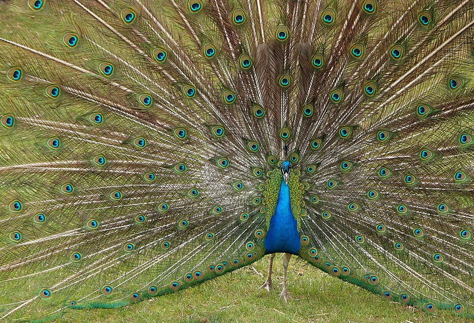

| Birds | Pets |
Indian Birds |
Foreign Birds |
Mute SWanThe mute swan is a species of swan and a member of the waterfowl family Anatidae. |
Bermuda petrel300 years, it was thought to be extinct this a "Lazarus species", that is, a species found to be alive after having been considered extinct |
MallardThe female lays eight to thirteen creamy white to greenish-buff spotless eggs, on alternate days |
BelgiumBelgium is a sovereign state and a federal constitutional monarchy with a parliamentary system. |
peacockThe Indian peafowl (Pavo cristatus), also known as the common peafowl,and blue peafowl, is a peafowl species native to the Indian subcontinent. |
keel-billedThe keel-billed toucan, also known as sulfur-breasted toucan or rainbow-billed toucan,is a colorful Latin American member of the toucan family. |
|
|
|
 |
|
|
|
|
| Copyright@2021. All Rights Reserved | |||||||||